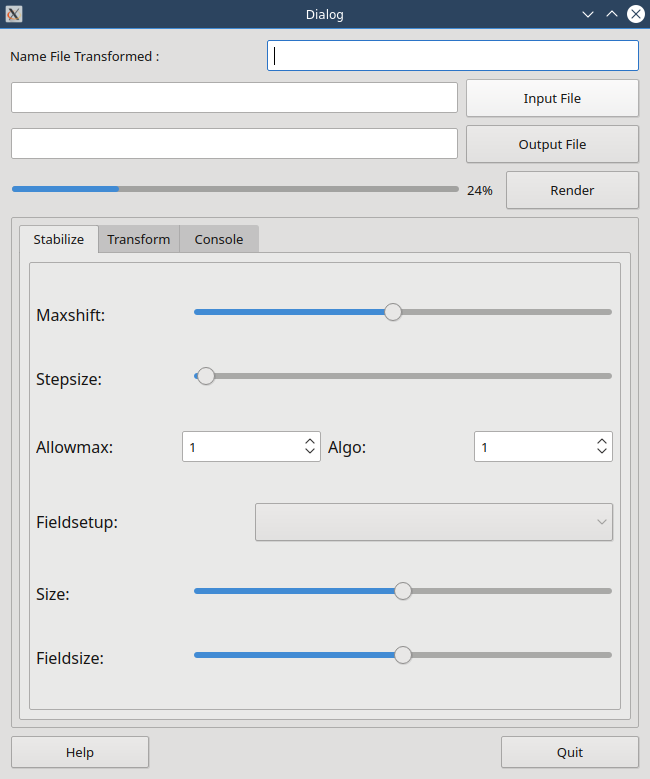

Introduction¶
A Linux Open Source application, free, easy to use, for grabbing your film from your DV or HDV Camecorder.
MX 5000 is a simple Gui for the great tool which is dvgrab. Hovewer, dvgrab is a command line tool. Nowaydays, people prefer to use « beautiful Gui » and that’s a good thing, if the Gui is well done, obviously. MX 5000 answers to this problematic and has been designed keeping this idea in mind. That’s the purpose of this projetc. I hope that it will be usefull for you like it is for me.
Features¶
Dependencies¶
liste ici
Getting help¶
là vous aurez de l’aide
Internationalisation¶
Pour l’instant, cette application n’a été traduite qu’en anglais et en français
Licence¶
ici c’est la GPL 3